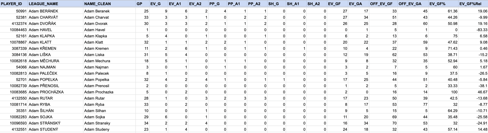

By Dave MacPherson | Posted Aug 19, 2020
In July 2019, I launched Pick224, a hockey analytics website containing data from over 15 hockey leagues across the world with a focus on junior hockey and the NHL draft. To compile this data, I first scrape all the individual game summaries of each league, then clean the data, total up all the stats, and join the results with each player’s biographical information.
Since launching, I’ve written blogs on how to scrape hockey data, whether from HTML web pages or sites that use JSON. I’ve since gotten a lot of questions from scouts and others who work in hockey asking about the next steps: cleaning and summarizing data.
If you have some experience with Excel or Google Sheets, aren’t yet comfortable getting started with a programming language like R or Python for data analysis, but still want to get shit done, this article is for you. Excel and Google Sheets are powerful tools, and it’s okay if you’re not ready to learn a programming language right now. After you get a good understanding of the things you can do with data, you can then venture on and learn R and/or Python if you’d like to do those things more efficiently and effectively.
In this article, I’ll walk through the whole process of turning raw hockey data into the summarized player totals you see on Pick224, all using Google Sheets. When I first launched Pick224, my database was entirely built using the methods below.
I recommend following along and working through the formulas. Here’s a file containing only the raw data that you can make a copy of and follow along with, and here’s a copy of a final file, after having worked through everything below.
If you’re already fully comfortable cleaning and summarizing data using Microsoft Excel, I recommend skipping this article and checking out Meghan Hall’s great work on moving beyond Excel for hockey analysis instead.
The Raw Data
To prepare for this article, I wrote some scrapers to pull everything I needed from the Czech U20 league’s 2020 season. This data includes:
The Raw Data
Using all of this raw data, we will be calculating the following season stats for each player who played at least one game:
The Initial Setup
Since we have all of our raw data, we’ll get started by creating a new Google Sheets spreadsheet. If you’re using Google Chrome and are logged in to a Google account, type sheets.new in the URL bar and hit enter to create a new file. Otherwise, sign in to Google Drive or create an account here, then create a new Google Sheets spreadsheet.
We’ll start by creating the following new sheets ("tabs") and pasting in our raw data:
From looking through the data, we can see where the connections are between the different sheets. Each game has a unique GAME_ID, each goal a GAME_ID and a GOAL_ID, and each player a unique PLAYER_ID. We’ll be using the connections between the sheets to compile our data.
The Functions We’ll Use
We’ll be using a lot of different Google Sheets functions throughout this exercise. Most of these functions and formulas can also be used in Excel, although some may function differently. Here’s a brief summary:
Cleaning the Data
The Goals tab
Starting with the Goals tab, let’s clean up the data and get it ready to be summarized.
The STR field contains how many players were on the ice for each team. We can use this to determine whether each goal was scored at even-strength, on the powerplay, or while shorthanded. The data is set up with the number of players on the ice for the scoring team, then the number of players on the ice for the other team, with the two separated by a slash and surrounded in square brackets. We can determine the strength of the play by checking whether the first number is greater than, equal to, or less than the second number. To do this, we’ll use an IF function. If the first number is greater than the second number, it’s a powerplay goal. If the first number is equal to the second number, it’s an even-strength goal. If the first number is less than the second number, it’s a shorthanded goal. To extract the numbers, we can use the MID function:
So =MID("[5/4]", 2, 1) would equal 5, and =MID("[5/4]", 4, 1) would equal 4. We can wrap the MID function with a VALUE function to convert the amount to a number instead of it being treated like a string. Then to compare the two numbers, we can use the IF function:
With the first STR entry in F2, we can use this formula:
We’ll then create new columns (EV, PP, SH) to later use for counting up all the goals of different strengths. This is also done with IF formulas, like this one:
The SCORER data contains the player's name and then the goals to date in parentheses, and the ASSISTS data contains up to two assisting players separated by a comma and their assists to date in parentheses. The PLAYER_URLS data is made up of the HTML for those two fields, and includes a URL for each player. For example, here is one entry from the PLAYER_URLS field:
This data contains something very useful: a unique identifier for each player. The "/hrac/38921" is from a URL linking to the player’s bio page on the league website. For example, https://www.hokej.cz/hrac/38921
Since we know each player’s identifier will be unique, we can use this instead of the player’s name so we won’t run into any issues if two players have the same name. So let’s extract the player ID for each player involved in each goal. We can see that each player is separated by a comma, so we can use the SPLIT function to split up the data and put each player into their own column.
=SPLIT(G2, ",") will create three columns: one for the scorer, one for the primary assist, and one for the secondary assist. We don’t need <a href="/hrac/38921">David SÝKORA <span class="text-13pt">(1)</span></a>, though — we just need the number. To get this, we can use the REGEXEXTRACT function, which allows us to specify a pattern that we want to extract from a text string:
REGEXEXTRACT(L2, "[0–9]+") will pull only the numbers from the data in the specified cell. We can use this function to create columns that contain only the player ID for the scorer (G), the first assist (A1), and the second assist (A2). This formula will pull the data as a string instead of treating it like a number, so we can wrap it with a VALUE function to then treat the number as a number.
For the assists, we’ll get an error if there was no assist. To avoid this, we can add an IF statement to the formula. If the cell containing the assist data is empty, we will return an empty string instead of trying to pull something from nothing:
The only remaining thing we’ll need for each goal is to pull which players were on the ice when it was scored. First, we’ll need to clean up the PlusMin tab.
The PlusMin tab
The PlusMin tab contains each goal from each game and the players who were on the ice when the goals were scored. There are two rows for each goal: one containing the players from the scoring team who were on the ice, and another containing the players who were on the ice for the team that got scored on.
I was lazy when scraping this data, so all we have is an HTML blob identifying the plus or minus row and another containing the player ID for all the players who were on the ice for that plus or minus.
First, we can create columns that identify whether each row is a PLUS row or a MINUS one. There are only two possibilities, so we can set up these formulas:
We’ll then create a unique identifier for each row so we can add this data to our Goals tab. The unique identifier will be a combination of the GAME_ID, the GOAL_ID, and whether it’s a plus or a minus row. For example, 2874561|1|P would be the plus row for the first goal of game #2874561. We can combine different fields into one string by using the ampersand (&):
We then need to pull each player ID. We can do this using the same SPLIT and REGEXEXTRACT functions we used in the Goals tab. We’ll then combine all the player IDs into one cell, which we can later use to count how many goals a player was on the ice for. Since player IDs can vary in length, we need to make sure player #38921 will not be included in calculations concerning player #1038921. To do this, we’ll put a "P" or "M" before each player ID and an "X" after.
We can then combine the player IDs using the JOIN function, choosing we’ll choose a pipe as the separator between each player ID:
This leaves us with data that looks like the following, which we’ll then join to the goal data:
The Goals tab, revisited
Since the unique identifier we created in the PlusMin tab is a combination of the GAME_ID, the GOAL_ID, and whether it’s a plus or a minus row, we’ll need to create something similar in the Goals tab:
We can then use the VLOOKUP function to pull the plusses and minuses. Where the unique identifier is in column G of the PlusMin tab and the data we want to extract is in column H of the PlusMin tab, here’s how we can get the data:
The Teams tab
You may have noticed that the Schedule tab has the team IDs in long form, like "J Slavia Praha", but the Goals tab has only three letters for each team, like "SLA". The GP tab only indicates whether the player was on the home or away team and doesn’t include any form of the team name. To bridge these gaps, let’s create a Teams tab. This tab will simply be a mapping, created manually, matching up the long-form names with the short-form ones:
We’ll use this tab in the below sections.
The Schedule tab
As mentioned above, we need to grab the three-letter team name for each team on the schedule. We can again use VLOOKUP here. With the home team in column B and the away team in column C:
We’ll use this data in the next section.
The GP tab
The GP tab is a full listing of every player who appeared in each game, so it has many more rows than any of the previous tabs. There were a total of 11,703 player games played in the 2019–20 season of the Czech U20 league. We’ll use this tab to calculate a lot of the stats mentioned in the "Goals" section above on a per-game basis, which we’ll then use to calculate season totals.
We already know how to pull the PLAYER_ID from the PLAYER_URL column:
Since all the team information we have is whether the player was on the home team or the away team, let’s use VLOOKUP to pull the three-letter team name and the opponent’s team name. If the player was on the home team, pull the home team from the Schedule tab. Otherwise, pull the away team:
Next, we can use the SUMIFS function to total up all the values we’ll need for the GF and GA stats we want:
For example, let’s say you want to total up how many apples you sold from a list of all fruits sold, with the item sold in column A and the quantity sold in column B:
=SUMIFS(A:A, B:B, "Apple") will get you the total apples sold.
For each player and each game, we’ll need to calculate how many even-strength goals the player was on the ice for, how many even-strength goals each team scored, and the number of even-strength goals that were scored while the player was not on the ice. We’ll be summarizing data from the Goals tab. The relevant data is in the following ranges:
To total up the number of even-strength goals scored by or against the player’s team in a game, we would sum column I (EV) of the Goals tab column for any goals that were scored in the same game by the player’s team or the opposing team. So our two criteria will be the GAME_ID and the TEAM:
To calculate how many even-strength goals the player was on the ice for, we’ll use the PLUSSES (column S) and MINUSES (column T) columns we set up earlier in the Goals tab. To do this, we’ll use REGEXMATCH to see whether the player’s PLAYER_ID (starting with a P or M and ending with an X) is found in the PLUSSES column or the MINUSES column. REGEXMATCH will return "TRUE" if a match is found, or "FALSE" if a match is not found. However, if we try to use the REGEXMATCH function on our PLUSSES column, we’ll hit an error. To avoid this, we need to wrap our whole formula with ARRAYFORMULA, which allows us to use functions on a range that we would otherwise only be able to use on one cell:
To calculate the number of even-strength goals that were scored for or against a player’s team while the player was not on the ice, we can simply subtract the PL_EV_GX numbers from the TEAM_EV_GX ones.
Summarizing all of the data
Creating a list of players
We now have everything we need to calculate season totals for each player. To do this, let’s create a new tab named Totals.
We want to summarize the 11,702 rows from the GP tab and the 2,150 goals scored into one row for each player. To do this, we’ll use the UNIQUE function. In column A of our Totals tab, we can use this formula to pull only one row each player who played in at least one game in the season:
To pull the player’s name in addition to their player ID, we can specify a second column and encapsulate the two ranges in curly braces:
If we want to sort this list of players in alphabetical order, we can use the SORT function:
Since the player names are in the second column, we can specify that we want to sort the range by the second column:
Looking at the player names, we’ll see that the last names are in capital letters and there are a lot of diacritics, or accented letters. For example: David SÝKORA
If we want to convert this to "David Sykora", we can use a combination of PROPER and REGEXREPLACE:
If there are multiple versions of one letter with different diacritics, we can enter them in the REGEXREPLACE formula in parentheses and separated by the pipe character:
I’ve come across a lot of different diacritics doing this work, so the current version of this formula is huge and grotesque:
Calculating totals
The majority of our totals can be calculated using the SUMIFS function. One exception is games played ("GP"), which we’ll instead use COUNTIF for:
For example, if the PLAYER_ID of the player we want to calculate games played for is in cell A2, and the PLAYER_ID field in our GP tab is in column H, the following formula would calculate that player’s games played:
As mentioned above, SUMIFS can be used for the majority of the other totals. One thing you may notice if you’re copy-pasting formulas from one column to another is that Google Sheets will automatically shift your formula over. So if you’re summing column G in one formula, but then paste that formula one column to the right, Google Sheets will automatically make the new formula sum column H. To avoid this, add dollar signs in front of your cell and range references to lock them when copy-pasting.
We can then use normal arithmetic to calculate EV_GF% and EV_GF%Rel. We can use IFERROR to catch cases where we would otherwise hit an error, and ROUND to round our numbers to two digits after the decimal:
We now have one sheet that contains all the summarized stats for each player who played a game during the season:

It’s important to check our numbers, so we can quickly check to make sure total games played equal the 11,702 rows from our GP tab and total goals (EV_G + PP_G + SH_G) equal the 2,150 rows from our Goals tab.
Summary and Next Steps
Throughout the above sections, we’ve taken raw data scraped from the Czech U20 league website and summarized it into season totals for each player, all in Google Sheets.
Some other steps I take with this data before adding it to Pick224 include scraping the biographical data for each player (birthdays, heights, and shot handedness) and joining that with the summarized data. I also pull each player’s most recent jersey number and the teams they played for during the season. You can find my final results on Pick224.
As mentioned in the introduction, the first version of the database used for my website was entirely built using the methods above. Once I learned what I wanted to do with my data, I was then able to code these steps using a programming language, allowing me to run the code much more efficiently. If you’re ready to make that jump, I’ll again point you towards Meghan Hall's work.
If data cleaning isn’t for you and you’d rather jump right into analysis, feel free to download any of the data available on Pick224. If you do something cool with the data, please let me know!